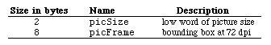
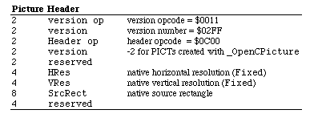

|
|
This Technical Note describes the changes and enhancements to 32-Bit QuickDraw
from version 1.0 (as shipped on the original Color Disk) to version 1.2, which
ships with System Software 6.0.5 and later. This Note assumes familiarity with
Inside Macintosh, Volume V, Color QuickDraw, and 32-Bit QuickDraw
release notes.
[Apr 01 1990]
|
32-Bit QuickDraw
Version 1.0 of 32-Bit QuickDraw shipped in May 1989 in response to the growing
need for Color QuickDraw support for direct color devices and pictures (PICT2)
and video boards for large-screen monitors which require 32-bit addressing for
black and white operation. This original version of 32-Bit QuickDraw was a
separate file that had to be copied manually into the System Folder. With the
introduction of the Macintosh IIci, Apple put 32-Bit QuickDraw into ROM. Now
System Software 6.0.5 and later offer 32-Bit QuickDraw as an integral part of
the System Software which can be installed by the standard Installer (although
the file is still separate).
This Note describes the changes and enhancements in version 1.2 of 32-Bit
QuickDraw from version 1.0. Beginning with version 1.2, QuickDraw
functionality is identical on all Color QuickDraw machines, including all the
performance improvements which were originally only available in the IIci
ROM.
Back to top
New Features (In No Particular Order)
PICTs Contain Font Name Information
Every time you draw text inside of an _OpenPicture and
_ClosePicture pair, QuickDraw stores the name of the current font and
uses it when playing back the picture. The opcode used to save this
information is $002C and its data is as follows:
PictFontInfo = Record
length : Integer; { length of data in bytes }
fontID : Integer; { ID in the source system }
fontName : Str255;
|
QuickDraw only saves this information one time for each font used in a picture.
When QuickDraw plays back a picture, it uses the fontID as a reference
into the list of font names which are used to set the correct font on the
target system.
For example, the following code:
GetFNum('Venice', theFontID); { Set a font before opening PICT}
TextFont(theFontID);
pHand2 := OpenPicture (pictRect);
MoveTo(20,20);
DrawString(' Better be Venice');
GetFNum('Geneva', theFontID);
TextFont(theFontID);
MoveTo(20,40);
DrawString('Geneva');
GetFNum('New York', theFontID);
TextFont(theFontID);
MoveTo(20,60);
DrawString('New York');
GetFNum('Geneva', theFontID);
TextFont(theFontID);
MoveTo(20,80);
DrawString('Geneva');
|
generates a picture containing font information like this:
OpCode 0x002C {9,
"0005 0656 656E 6963 65"} /* save current font */
TxFont 'venice'
DHDVText {20, 20, " Better be Venice"}
OpCode 0x002C {9, /* save next font name */
"0003 0647 656E 6576 61"}
TxFont 'geneva'
DVText {20, "Geneva"}
OpCode 0x002C {11, /* ditto */
"0002 084E 6577 2059 6F72 6B"}
TxFont 'newYork'
DVText {20, "New York"}
TxFont 'geneva' /* second Geneva does not
need another $002C guy */
|
This feature works regardless of the type of picture being saved, including old
style PICTs in a black and white port. Using _OpenCPicture instead of
_OpenPicture to start a recording session results in the same
functionality.
Direct PixPat Structures Now Supported
QuickDraw now supports 16-bit and 32-bit per pixel PixPat structures
(patType = 1). In addition, it now supports a new patType
(3) which uses dithering whenever 16-bit or 32-bit pixel patterns are
displayed on indexed devices.
Direct 'cicn' Resources Now Supported
QuickDraw now supports 16-bit and 32-bit per pixel 'cicn' resources.
The 16-bit per pixel is particularly cool since you save the space required for
an 8-bit 'clut'.
GWorlds Can Now Be Allocated in MultiFinder Temporary Memory
You can now use the new useMFTempBit (bit 2) in a call to
NewGWorld as an option to allocate pixels in MultiFinder temporary
memory. In addition, you can now allocate screen buffers in MultiFinder
temporary memory using the following routine, defined in Pascal and C:
FUNCTION NewTempScreenBuffer (globalRect: Rect; purgeable: BOOLEAN;
VAR gdh: GDHandle;
VAR offscreenPixMap: PixMapHandle): QDErr;
INLINE $203C,$000E, $0015,$AB1D; { Move.L #$000E0015,D0
_QDOffscreen
}
pascal QDErr NewTempScreenBuffer (Rect *globalRect, BOOLEAN purgeable,
GDHandle *gdh,
PixMapHandle *offscreenPixMap)
|
Indexed to Indexed Dithering
_CopyBits now supports the ditherCopy transfer mode whenever the
destination device is between one and eight bits per pixel, regardless of the
depth of the source image. With this support, an eight-bit image can now be
approximated on a one-bit or a four-bit device by using error diffusion.
Furthermore, an eight-bit image could also be dithered to a different set of
256 colors or a four-bit image could be dithered to an eight-bit device that
does not have the desired colors.
32-Bit Addressed PixMap Structures
Version 1.2 defines a new pmVersion (baseAddr32 = 4) for
32-bit pointer baseAddr values. The baseAddr of such
PixMap structures is treated as a 32-bit address, so no stripping or
address translation is performed on it in 32-bit mode. This is a specially
useful feature when the base address of a PixMap points to a NuBus address, for example in a video grabber board.
A new call, Pixmap32Bit, is now available to inquire if a given
PixMap requires 32-bit addressing.
FUNCTION Pixmap32Bit(pmh:pixMapHandle):Boolean;
INLINE $203C,$0004, $0016,$AB1D; { Move.L #$00040016,D0
_QDOffscreen
}
pascal BOOLEAN Pixmap32Bit(pixMapHandle pmh)
|
Updated GetPixBaseAddress
Version 1.2 updates GetPixBaseAddress to return the address of any
PixMap. The routine does the right address translation or stripping
for all PixMap structures, including screen devices, unlocked GWorlds,
and 32-bit addressed PixMap structures. The address it returns is
only valid in 32-bit addressing mode. Also unless the PixMap is locked
and made unpurgeable, the address returned by GetPixBaseAddress is
only valid until any call to QuickDraw or the toolbox is made.
_CopyBits from Screen Devices
The picture recording mechanism has changed so that if you call
_CopyBits while recording a picture with the source PixMap
being a screen device, the data is correctly accumulated into the picture.
Note that if the screen being copied is not the main screen, then the
PixMap must be a 32-bit addressed PixMap. No auxiliary
screen buffer is allocated if the source rectangle covers only one screen.
New Picture Recording Trap
Version 1.2 adds a new call, _OpenCPicture, to create pictures that
contain information regarding the native resolution of the recorded image.
When QuickDraw draws this picture, it scales the image to the resolution of the
target device. Applications that need to scale the images directly can also
access this information.
FUNCTION OpenCPicture(VAR CPictInfo:CPictRecord):PicHandle;
INLINE $AA20;
pascal PicHandle OpenCPicture(CPictRecord *CPictInfo)
|
where
struct CPictRecord {
Rect CPicFrame; /* Bounding rect of Picture at native resolution */
Fixed CPicHRes; /* native horizontal resolution in pixels/inch */
Fixed CPicVRes; /* native vertical resolution in pixels/inch */
short CPicVersion; /* version of this PICT info set to -2 */
short reserved; /* for future expansion set to zero */
long reserved; /* for future expansion set to zero */
|
The new picture header data looks like the following:


The following is a sample PICT created with _OpenCPicture:
00 48 /* low word of size */
00 00 00 00 00 7D 00 7D /* picFrame at 72 dpi */
00 11 /* PICT version opcode */
02 FF /* version number */
0C 00 /* PICT header Opcode */
FF FE /* PICT version -2 */
00 00 /* reserved */
01 20 00 00 /* HRes (Fixed) */
01 20 00 00 /* VRes (Fixed) */
00 00 00 00 01 F4 01 F4 /* picFrame at native resolution */
00 00 00 00 /* reserved */
/* picture data follows */
|
Back to top Random Notes
For information on bug fixes in the System Software 6.0.5 release of 32-Bit
QuickDraw (version 1.2), please refer to the System Software 6.0.5 Change
History, which is available on the Developer CD Series, AppleLink in the
Developer Services Bulletin Board (Developer Services: Macintosh Developer
Technical Support: System Software), and the Apple FTP site on the Internet in
the ~ftp/pub/dts/sw.license.
Note that the dispatching mechanism for the new _QDOffscreen calls is
slightly different than previously documented; it now requires that the high
word passed in D0 contain the total length of the parameters (in
bytes). The reason for this change is that if the call is made in an earlier
version of 32-Bit QuickDraw, the system can strip the parameters from the stack
and return QDError set to the caller (instead of crashing).
Back to top References
Inside Macintosh, Volume V, Color QuickDraw
32-Bit QuickDraw Release Notes (available from APDA)
System Software 6.0.5 Change History
d e v e l o p, Issue I
NuBus is a trademark of Texas Instruments.
Back to top Downloadables
|

|
Acrobat version of this Note (120K).
|
Download
|
|